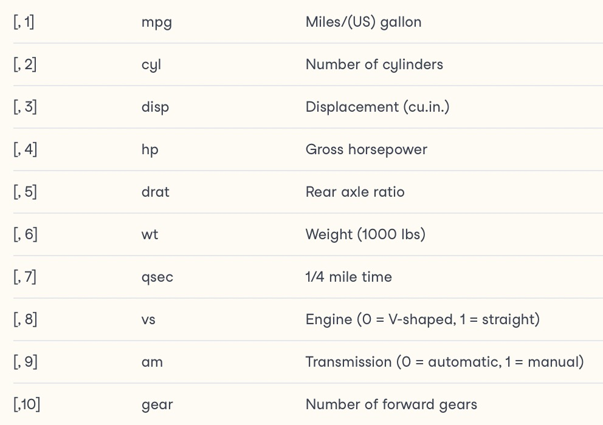
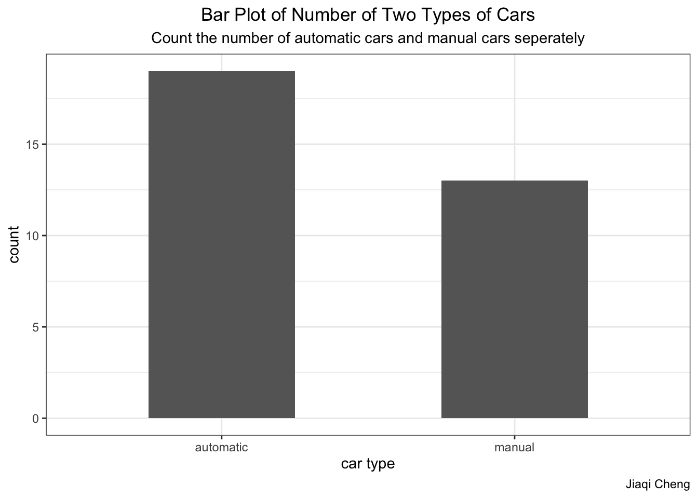
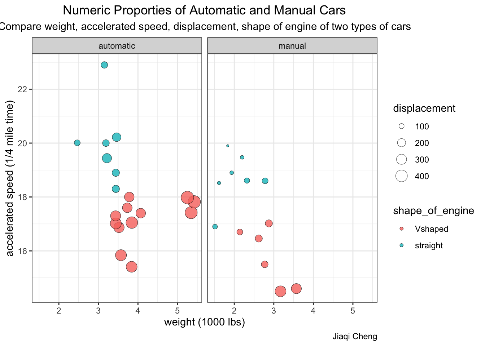
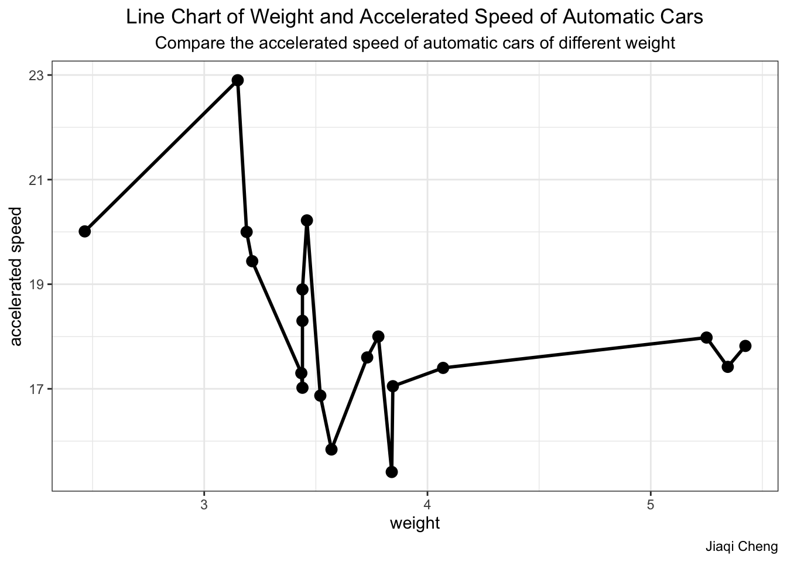

Example Analysis
By describing and analyzing features of cars to distinguish the proporties of automatic and manual cars.
The intended audience are car sellers, car managers, drivers, and those who want to gain more general knowledge about automatic and manual cars.
The dataset mtcars was extracted from the 1974 Motor Trend US magazine, and comprises fuel consumption and 10 aspects of automobile design and performance for 32 automobiles (1973–74 models). (“MT Cars,” n.d.)
There are many other interesting data analysis projects using mtcars in Kaggle.
- Mtcars includes 32 observations on 11 (numeric) variables. (“MTCARS: Motor Trend Car Road Tests,” n.d.)

Note
Include necessary packages and load the data set.
library(tidyverse)── Attaching packages ─────────────────────────────────────── tidyverse 1.3.2 ──
✔ ggplot2 3.4.0 ✔ purrr 0.3.5
✔ tibble 3.1.8 ✔ dplyr 1.0.10
✔ tidyr 1.2.1 ✔ stringr 1.4.1
✔ readr 2.1.3 ✔ forcats 0.5.2
── Conflicts ────────────────────────────────────────── tidyverse_conflicts() ──
✖ dplyr::filter() masks stats::filter()
✖ dplyr::lag() masks stats::lag()library(dplyr)
library(tidyr)
library(ggplot2)
attach(mtcars)The following object is masked from package:ggplot2:
mpghead(mtcars) mpg cyl disp hp drat wt qsec vs am gear carb
Mazda RX4 21.0 6 160 110 3.90 2.620 16.46 0 1 4 4
Mazda RX4 Wag 21.0 6 160 110 3.90 2.875 17.02 0 1 4 4
Datsun 710 22.8 4 108 93 3.85 2.320 18.61 1 1 4 1
Hornet 4 Drive 21.4 6 258 110 3.08 3.215 19.44 1 0 3 1
Hornet Sportabout 18.7 8 360 175 3.15 3.440 17.02 0 0 3 2
Valiant 18.1 6 225 105 2.76 3.460 20.22 1 0 3 1data <- as_tibble(mtcars)
data <- rename(data, weight = wt, shape_of_engine = vs, displacement = disp)
Preprocess
auto <- select(data, am:0)
manu <- select(data, am:1)
data$am <- as.factor(data$am)
data$am <- factor(data$am,levels=c("0","1"),labels=c("automatic", "manual"))
data$shape_of_engine <- as.factor(data$shape_of_engine)
data$shape_of_engine <- factor(data$shape_of_engine,levels=c("0","1"),labels=c("Vshaped", "straight"))
Data Analysis
First, we count the number of automatic and manual cars in the dataset.
am_class <- data.frame(data$am)
am_class <- rename(am_class, am = data.am)
ggplot(data=am_class, mapping=aes(x=am)) +
geom_bar(stat="count",width=0.5, fill="#666666") +
xlab("car type") + ylab("count") +
labs(title = "Bar Plot of Number of Two Types of Cars",
subtitle = "Count the number of automatic cars and manual cars seperately",
caption = "Jiaqi Cheng") +
theme_bw() +
theme(plot.title = element_text(hjust = 0.5), plot.subtitle = element_text(hjust = 0.5))
Let’s have a look of the mean of important variables of these two types of cars.
data_gb_am <- group_by(data, am)
summarise(data_gb_am, miles_per_gallon = mean(mpg, na.rm=TRUE), displacement = mean(disp, na.rm = TRUE), horsepower = mean(hp, na.rm = TRUE), weight = mean(wt, na.rm = TRUE), mile_time = mean(qsec, na.rm=TRUE))# A tibble: 2 × 6
am miles_per_gallon displacement horsepower weight mile_time
<fct> <dbl> <dbl> <dbl> <dbl> <dbl>
1 automatic 17.1 231. 160. 3.22 18.2
2 manual 24.4 231. 127. 3.22 17.4- Then we evaluate the accelerated speed of two types of cars.
qsec_ordered <- arrange(data, qsec)
ggplot(qsec_ordered, aes(weight, qsec, fill = shape_of_engine, size = displacement)) +
geom_point(shape=21,colour="black",stroke=0.25,alpha=0.8) +
facet_grid(.~am) +
xlab("weight (1000 lbs)") + ylab("accelerated speed (1/4 mile time)") +
labs(title = "Numeric Proporties of Automatic and Manual Cars",
subtitle = "Compare weight, accelerated speed, displacement, shape of engine of two types of cars",
caption = "Jiaqi Cheng") +
theme_bw() +
theme(plot.title = element_text(hjust = 0.5), plot.subtitle = element_text(hjust = 0.5))
- Furthermore, we explore the connection between the weight and accelerated speed of automatic cars.
auto_v <- filter(data, am == "automatic")
df <- data.frame(auto_v$weight, auto_v$qsec)
ggplot()+geom_line(data = df,aes(x = auto_v.weight,y = auto_v.qsec),size=1)+
geom_point(data = df,aes(x = auto_v.weight,y = auto_v.qsec),size=3)+
xlab("weight")+ylab("accelerated speed")+
labs(title = "Line Chart of Weight and Accelerated Speed of Automatic Cars",
subtitle = "Compare the accelerated speed of automatic cars of different weight",
caption = "Jiaqi Cheng") +
theme_bw()+
theme(plot.title = element_text(hjust = 0.5), plot.subtitle = element_text(hjust = 0.5))Warning: Using `size` aesthetic for lines was deprecated in ggplot2 3.4.0.
ℹ Please use `linewidth` instead.
Summary
Automatic cars and manual cars have different features. In this project, we analysed the weight, accelerated speed, displacement, shape of engine, and many other properties of these two types of cars.Generally speaking, automatic cars are heavier than manual cars, can achieve higher accelerated speed and have greater displacement. Lighter cars can achieve higher accelerated speed than heavier cars.
Functions Used
dplyr: select, rename, arrange, filter, group_by
ggplot2: geom_bar, geom_point, geom_line
References
“Callout Blocks.” n.d. Quarto. https://quarto.org/docs/authoring/callouts.html.
“MT Cars.” n.d. Facebook. https://www.facebook.com/mtcars.co.uk/.
“MTCARS: Motor Trend Car Road Tests.” n.d. RDocumentation. https://www.rdocumentation.org/packages/datasets/versions/3.6.2/topics/mtcars.